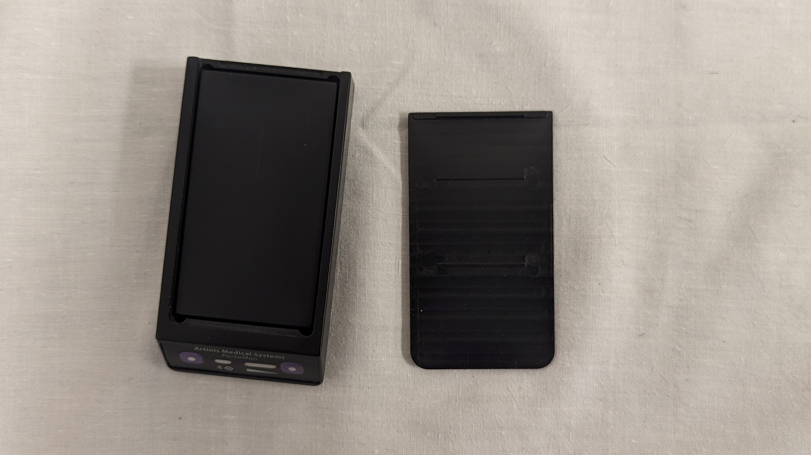
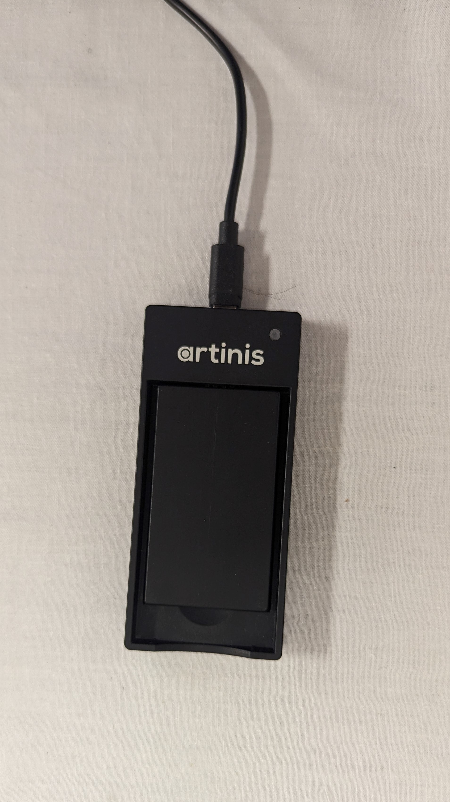
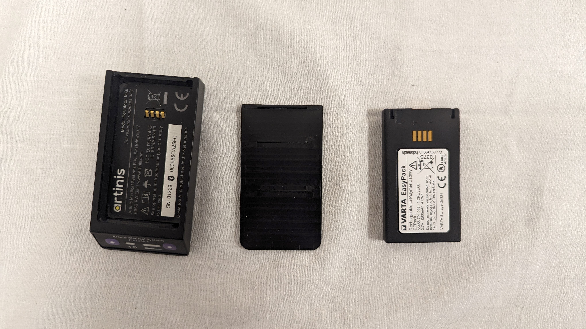
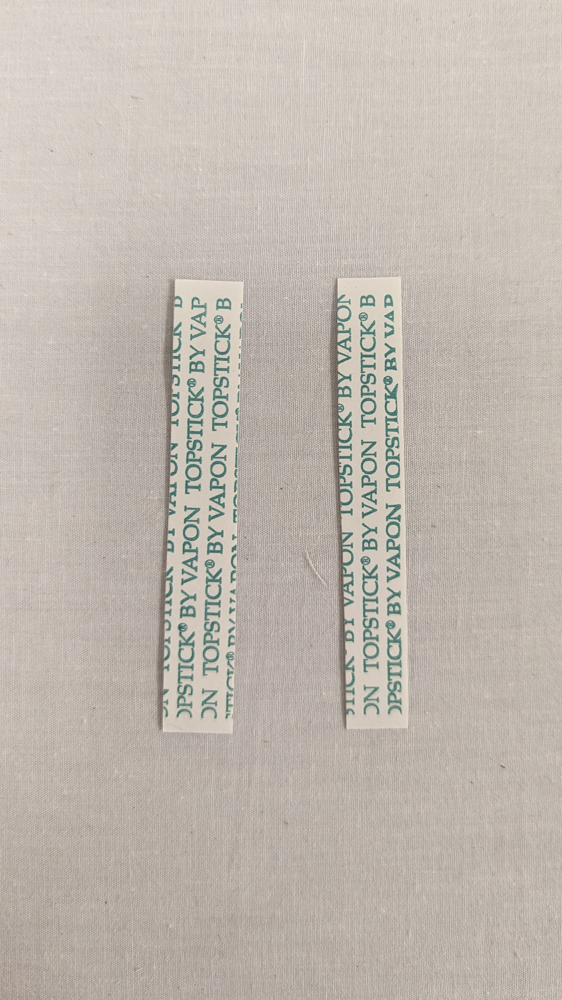

A PortaMon
A.1 Specifications
The PortaMon by Artinis Medical Systems is a spatial-resolved near-infrared resonance spectroscopy device. It uses one receiver with three infrared transmitters. Each transmitter is 5 millimeters further from the receiver. This allows the application of mathematical formulas to calculate an absolute tissue hemoglobin saturation, which Artinis Medical Systems refers to as the Tissue Saturation Index, or TSI. In the literature, this is referred to by various acronyms, such as TOI (Tissue Oxygenation Index). A full examination of the mathematics and physics behind the calculation of TSI was published as part of the SPIE Conference on Optical Tomography and Spectroscopy of Tissue III in 1999.1
The yellow case is one unit.

It contains the following:
- ASUS laptop
- laptop charging chord with European to American outlet converter
- yellow Artinis Oxysoft USB
- Bluetooth dongle
- ROCKEY4ND license key

- PortaMon device 
- two batteries
- battery charging dock
- micro-USB chord for battery charging dock
A.2 Oysoft
Oxysoft is the software created by Artinis Medical Systems to connect with the PortaMon, collect, and analyze data.
Oxysoft is installed on the ASUS laptops that go with the yellow cases. These laptops do not have any PrismaHealth or USC SoMG software on them. If someone should want to install Oxysoft on a PrismaHealth or USC SoMG computer, Oxysoft will have to be approved by the respective organization’s IT team.
Oxysoft has been approved to be on Sara Biddle’s PrismaHealth desktop computer by PrismaHealth’s IT. No other PrismaHealth or USC SoMG computers have Oxysoft installed.
If you wish to install Oxysoft on a personal computer or have been approved to install Oxysoft on an organization’s computer, plug the yellow Artinis Oxysoft USB into the computer and run the installer.
Oxysoft uses a legacy Bluetooth dongle to connect to the PortaMon. This makes using Oxysoft on a computer with the most up to date Windows difficult. It is easier to collect data on the ASUS laptops, which are default configured to use the Bluetooth dongle, and then export the data for analysis.
Oxysoft creates files with the extension
.oxy4for every new measurement.
A.3 Batteries
The PortaMon batteries can hold up to 8 hours of power for the device. Make sure they are fully charged prior to a patient’s visit.
Plug the micro-USB into the battery charging dock. Plug this into an outlet. Place the battery into the dock, sticker side down. The three metal connectors on the narrow side of the battery must be touching the three metal connectors on the charging dock. If the battery is correctly placed in the dock, an LED will light up. When the battery is fully charged, the LED will be green.

A.4 Before Data Collection
A.4.1 Instrument Preparation for Data Collection
- Place a fully charged battery in the PortaMon, with the three connectors on the battery touching the three connectors in the PortaMon.
- Slide the top of the PortaMon back in until it clicks into place. If the battery is charged and placed correctly, LEDs on the bottom of the PortaMon will light up.

- Wrap the PortaMon in clear saran wrap and tape the saran wrap in place. This prevents sweat and other moisture from getting in to the PortaMon. Since the PortaMon has electronic parts, it cannot be sterilized using liquids and the saran wrap means we do not have to sterilize the device itself. When testing is complete, pull saran wrap and tape off the PortaMon and throw it away.


- Cut the double-sided taupe tape length-wise into two long strips.
- Place one strip to the left of the transmitters and receiver and one strip to the right of the transmitters and receiver. Leave the exterior side of the double-sided tape covered until the placement on the thigh is complete.

A.4.3 Start a Measurement
- Turn on the ASUS laptop.
- Ensure the bluetooth dongle and the Rockey dongle are plugged in to the laptop.
- The Rockey license key must say ‘ROCKEY4ND’ and NOT ‘ROCKEY4’. The ‘ROCKEY4’ is from an older Artinis device and is not the current license key. You will not be able to use the most up to date Oxysoft software with the incorrect license key.
- Open Oxysoft.

- Close any open graphs in the main panel.
- Select
Graphsin the top bar.
- Select
Close all graphs. There should be no open graphs in the main panel.
- Select

- Select
Measurementin the top bar. - Select
Create Measurement and Start Device (Wizard)...from drop down.

- Name the measurement appropriately.
- Select the
Copy settings from:drop down. - Scroll to the top of the drop down and select
no copy.
- Click
Next. Pop up will open to add a bluetooth device.

- Click
Add. Pop up will open to select type of device. - Select
OxyMon/PortaMon/PortaLite/OctaMon, which should be auto filled.
- Click
OK. - Select correct device number, this should match the number on the top of the Portamon.

- Click
Connect. - Device should pair with the computer. If it does not, try the following steps:
- Check the device is on. The green LED light should be on. If not, turn on by holding down the button on the left until the lights come on (about three seconds).
- Hold the bluetooth button down for about three seconds while you click
connecton the computer. - Unpair the device with the computer in the computer’s bluetooth settings, then re-pair.
- Restart the computer.
- Try using the other Portamon.
- When successfully connected, a blue LED will turn on on the Portamon and the device type and number will be listen in the
Combined Devicespop up.

- Click
OK. - The Optode-template window will now be open.
- Under
Optode-template: (Filtered by PortaMon)click the drop down. - Select
Portamon TSI Fit Factor.

- Under
k (1/mm)click the drop down. - Select
1.63 (calf).

- Under
h (1/mm)click the drop down. - Select
5.5e-4 (calf).

- Click
Next. - The Light Source to Optode Mapping window will now be open. Leave all settings as is and click
Next.
- The Device settings window will now be open. Leave all settings as is and click
Next.

- The Further Options window will now be open. The
Actiondrop down should haveStart measurement after finishing wizardselected.

- Click
Finish. - The Create All Graphs window will pop up. Leave settings as is and click
OK.

- There will be an Oxysoft pop up. It says ‘The program will enable the light sources now. Are you sure you want to start the device(s)?’ DO NOT click yes yet. Wait until device has been placed correctly. Follow the steps described in A.4.4.
A.4.4 Instrument Placement on Vastus Lateralis
The PortaMon can measure up to 2 centimeters depth into tissue. Since we are interested in muscle oxygenation, the muscle belly has to be within 2 centimeters from the surface of the skin. Otherwise, the device is not measuring muscle oxygenation but adipose tissue oxygenation. Therefore, we use an ultrasound to measure the subcutaneous adipose tissue thickness.
Place the device over the location measured by ultrasound.
Connect the NIRS by following the steps under A.4.3.
Click ‘yes’ to enable light sources and begin data collection. Wait approximately 10 seconds. Check the DAQ (Data Acquisition) values to determine whether the NIRS is receiving good data. If one or more of the DAQ values show as red, then make small adjustments to the placement of the device to attempt to get better DAQ values. If the small adjustments add up to a large difference from the original ultrasound measurement location, re-measure adipose tissue thickness using the ultrasound in the new location.
When all three DAQ values remain white when the subject moves around their leg, then the device is in the best location. If one of the DAQ values turns red during movement, that can be okay but only ONE. If two of the DAQ values are red, then TSI cannot be calculated so we do our best to have at least two good signals, three if at all possible.
Rock the device laterally and remove the tape cover on the exposed side. Rock the device back into place and stick the tape to the subject’s skin. Repeat on the other side. Double check that the DAQ values remain consistent.
Take a picture of the placement. Use a measuring tape to show the distance from the top of the kneecap to the bottom of the device and use a perpendicular measuring tape to show the distance from the center of the thigh to the right edge of the device. Print the picture and place in the participant’s physical file. Upload a .png of the picture into the RedCap.
A.5 During Data Collection
- When the device is placed correctly, click yes. The new measurement will begin.

- When you are done with the measurement, click the red pill in the top bar to stop the light sources. Oxysoft will stop the rolling every 30 seconds view and you will be able to see the whole measurement in the panes.


A.6 After Data Collection
A.6.1 Change Measurement Properties
- Right click on the name of the measurement in the
Projectpanel on the left. - Select
Properties.... This will open up a new panel.

- Leave the measurement name and data file as is.
- Click
Next. - Under
Optode -template:selectPortaMon TSIinstead ofPortaMon TSI Fit Factor.

- Change the settings as follows:
- Under
d (mm)type32.5. - Under
delta d (mm)type5. - Ensure
k (1/mm)is1.63 (calf). andh (1/mm)is5e-4 (calf).
- Under
- Click
Next. - When
Tx3has been removed from the TSI calculations, the graph panels will look different. TheRx1-Tx3panel will have two flat lines, one blue and one red. TheTSIFFpanel will still have a green line forTSI, and will no longer have aTSIFFline in that panel.

To undo these changes and revert to the original measurement with Tx3 included in the TSI calculations, right click on the file name and open up the Properties panel again. Click Next.
Next to the Optode-template settings table, there is a button on the bottom right that says Restore. Click Restore. Click Next.
The graphs are now restored to their original state.
A.6.2 Data Export
Ensure that only one measurement is open in the Oxysoft graph panels. Do this by closing all graphs, then selecting the name of the measurement you want to open in the file pane on the left.
If you are not sure or cannot tell, under the Graph drop down of the header bar, select Close all graphs. There should be no visible graphs in the main panel.
Select the name of the measurement you want to export in the Project panel on the left. Click Open all graphs under the Measurement drop down while the name of the file is highlighted. There should be four panels open, one titled Tx1-Rx1, Tx2-Rx1, Tx3-Rx1, and one TSIFF.
If all three transmitters had good DAQ values during data collection and never dropped into red, skip the next steps. If there were issues with only Tx3, follow the steps described in ??.
Select Export measurement under the Measurement dropdown.

A new panel will open. Select the type of file you wish to export as. The automatic selection is text (.txt), which is the preferred type of export.

Click Next.
A new popup will prompt you to choose a location for the exported file.

Click Browse.

There is a folder on the desktop for all data for the NIRS study. Select that folder as the destination. In the file name bar, type in the name of the measurement. I prefer for the exported file and the name of the measurement in Oxysoft to match for consistency. When you type in the name of the measurement in oxysoft, it will prompt you to select nameofthefile.oxy4. Do not select this. Just type the name of the measurement with no file extension.

Click Save.

The file path should be to the NIRS data folder and should be named the same as the measurement with a .txt extension.
Click Next.
The Export Options popup will have several selections for the type of data to export. Leave the default selection, Graph data of open graphs. Click Next.

The Export Time Span pop up will have the option to remove data from the beginning or end of the measurement. Leave the time span as it is and export the full measurement. Click Start Export.